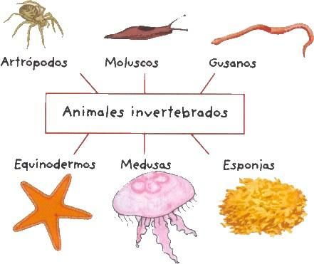

¿Qué es un invertebrado?

Los invertebrados son animales que no tienen columna vertebral. Este grupo es diverso e incluye insectos, moluscos, crustáceos, equinodermos y gusanos.
Tipos de invertebrados
Mostrar / Ocultar tipos
- Insectos: tienen seis patas y generalmente dos pares de alas.
- Arácnidos: tienen ocho patas y viven en tierra.
- Moluscos: tienen cuerpos blandos y muchas especies tienen concha.
- Crustáceos: viven en agua y tienen caparazón duro.
- Echinodermos: como estrellas de mar, se mueven con pequeños pies tubulares.
Comparación interna
| Función | Invertebrados |
|---|---|
| Soporte | Exoesqueleto o cuerpo blando |
| Protección | Caparazón, cutícula o piel protectora |
| Movimiento | Se desplazan con patas, ventosas, músculos o contracciones |
Pequeña prueba
Selecciona la respuesta correcta:
Correcto: la medusa es un invertebrado.
Incorrecto: el caballo es un vertebrado.